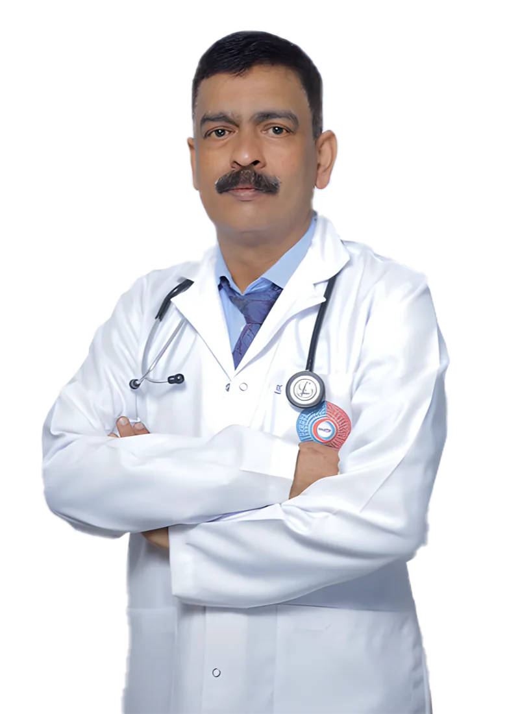
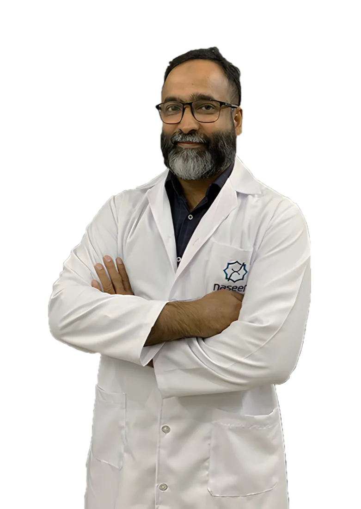
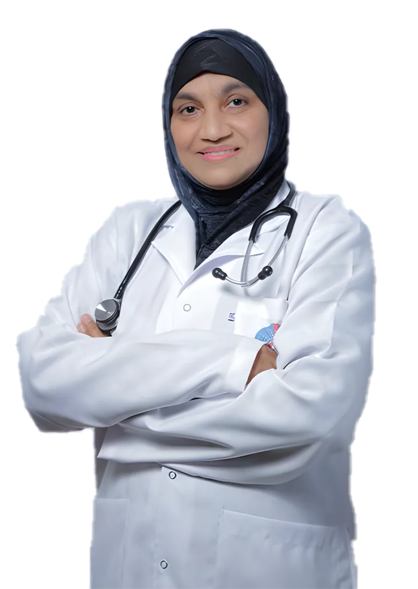
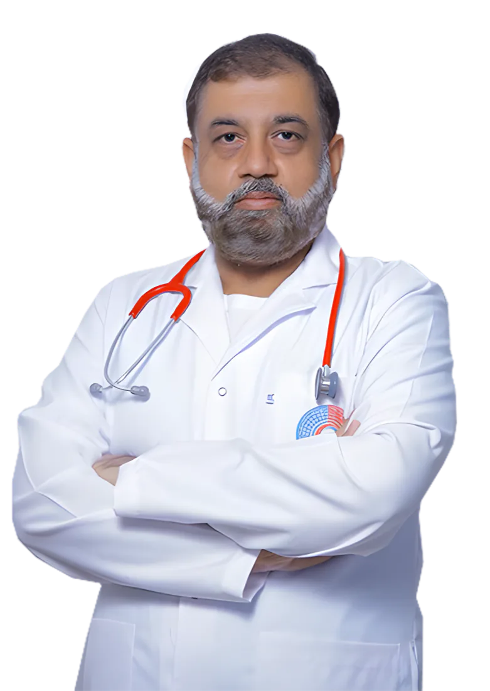

Reception and the kiosk
Register at the front desk. On a follow-up visit, take your token from the kiosk instead; it prints your lab report too, so you skip the queue.
مجمع نسيم جدة الطبي العام
A general medical centre in Al Aziziyah since 2003. Near Souq Al Manar, open day and night.
Walk in at any hour. Over 25 doctors in ten specialities, with the lab, X-ray and ultrasound in the same building.

Sahar Al Wardi, Al Aziziyah

Same door, after darkOpen 24 hours. Emergency line 012 287 5570
We're an outpatient polyclinic, founded by Dr Adnan Mohamed Yusuf Salama in 2003. Our GPs work three shifts, so there's a doctor in clinic from 8am to midnight, and the specialists keep morning and evening hours. Lab and X-ray results go straight onto our system, so you never carry reports to your doctor.
Sorted by who is in clinic right now, Jeddah time. Ask for any doctor by name when you book.

General Physician
9am–1pm & 5pm–9pm

Internist
9am–1pm & 5pm–9pm
Paediatric Consultant
Mon & Thu, 10am–1pm

Pulmonologist
8am–4pm

General Dentist
8am–4pm

General Dentist
4pm–11pm

Ophthalmologist
10am–2pm & 5pm–11pm

Orthopaedic Surgeon
2pm–10pm

Orthopaedic Surgeon
9am–1pm & 5pm–9pm

General Surgeon
9:30am–1pm & 5pm–9:30pm

ENT Specialist
10am–1pm & 5pm–10pm

Paediatrician
10am–1pm & 5pm–10pm

Obstetrician & Gynaecologist
10am–1pm & 5pm–10pm

Obstetrician & Gynaecologist
Sun–Thu 1–5pm · Sat 10am–1pm & 5–10pm

Radiologist
10am–1pm & 5pm–10pm

Pathologist
9am–1pm & 5pm–9pm

General Physician
10am–1pm & 5pm–10pm

Oral & Maxillofacial Surgeon
8am–4pm

Orthodontist
4pm–midnight

General Dentist
8am–4pm

General Dentist
4pm–midnight

General Dentist
8am–4pm
General Dentist
4pm–midnight

General Physician
2pm–10pm

General Physician
8am–4pm

General Physician
8am–4pm

General Physician
4pm–midnight

General Physician
8am–4pm

General Physician
4pm–midnight
General Physician
8am–4pm
Ten clinics, plus the lab and radiology. Open any one to see what we treat there.
Register at the front desk. On a follow-up visit, take your token from the kiosk instead; it prints your lab report too, so you skip the queue.
Before you see the doctor, a nurse checks your blood pressure, temperature, pulse, oxygen and weight. The readings reach the doctor before you do.

Blood tests, X-ray, panoramic dental X-ray and ultrasound, run by a radiologist and a pathologist. Results go onto the centre's system.
Fill your prescription at Mansoor Pharmacy or Naseem Pharmacy nearby, and get glasses made at Eye Point. No driving around Aziziyah.
A yearly privilege card for you and your family: free consultations, and money off tests, scans, dental work and the pharmacy.
| Benefit | Silver125SAR1 member | Gold250SAR3 members | Diamond500SAR5 members |
|---|---|---|---|
| Free consultations | 4 | 8 | 12 |
| Radiology | 35% | 35% | 40% |
| Laboratory | 35% | 35% | 40% |
| Ophthalmology | 35% | 35% | 40% |
| Dental | 10% | 15% | 20% |
| Minor procedures | 10% | 15% | 20% |
| Pharmacy | 5% | 7% | 7% |
Prices are before VAT. Each card is valid for one year from registration. Once the free consultations are used, normal fees apply. Lab tests and scans referred outside the centre aren't covered.
Walk in, no appointment needed.
Bupa Arabia Tawuniya MedGulf Malath SAICO Al Rajhi Takaful AXA Cooperative Gulf Union Cooperative TCS Mednet
We work with these insurers, and self-pay patients are welcome. Call before your visit and we'll check your cover.
Sahar Al Wardi, Al Aziziyah District, Jeddah 23342
Near Souq Al Manar. Parking right in front of the building.
24 hoursEvery day of the week, Fridays included.